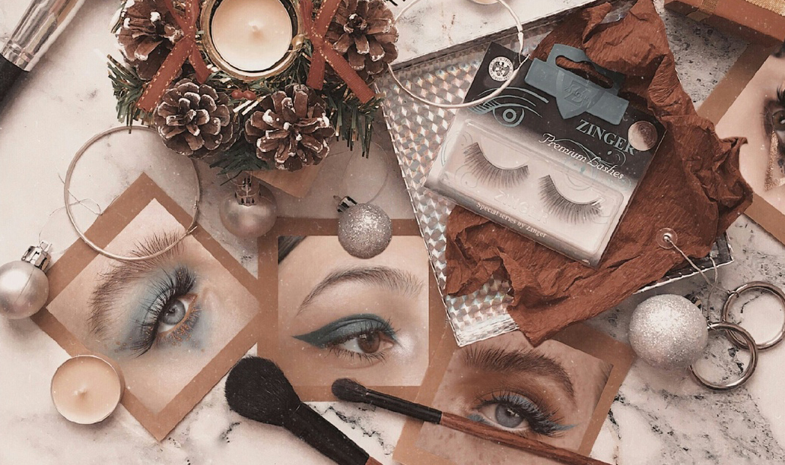

Говорят, что женщина тратит уйму времени перед зеркалом, приводя себя в порядок. Она накладывает макияж с тщательностью, граничащей с работой нейрохирурга. Ведь для любой женщины это так важно – хорошо выглядеть и нравится самой себе. Поэтому женщина никогда не жалеет ни времени, проведенного перед зеркалом, ни денег на хорошую косметику.
Косметика для женщины – это не попытка обмануть кого-то и казаться красивее, чем она есть на самом деле. Это действительно возможность стать красивее, и не только внешне, но и в душе. Ведь если в результате нескольких мазков румян, теней, помады, туши женщина начинает нравиться сама себе, то и ее отношение с окружающим миром кардинально меняется.
Наложив макияж, женщина обоснованно говорит себе – я красавица! А это значит, что у нее высокая самооценка, что она любит окружающих, дарит свет и тепло всему миру. И от этого становится еще краше!
